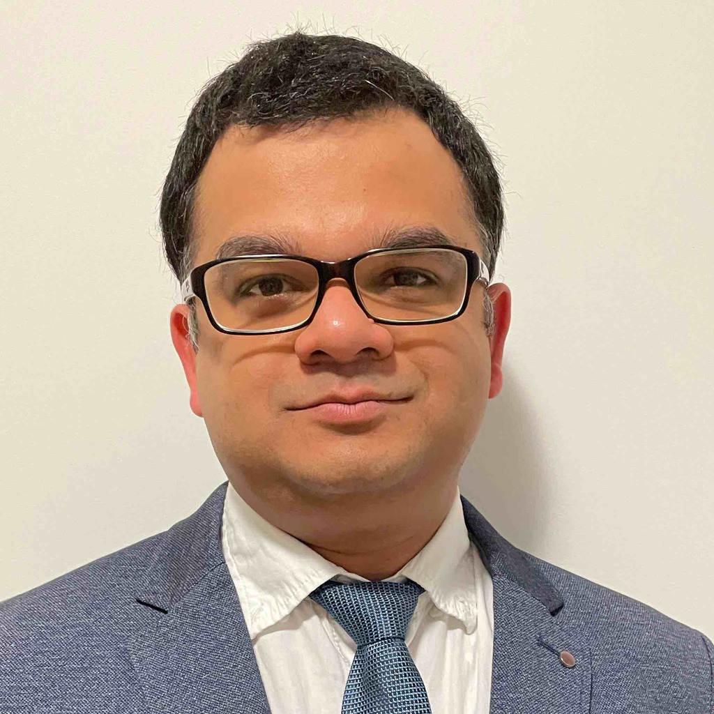

|  |
Siddhesh SuleTechnical Manager @ Merit Automotive | PRINCE2 Agile® Foundation Certified | Python | Matlab-Simulink | Systems Engineering B.E, Mechanical SW, University of Pune, India I am a Technical Manager with over 13 years of experience in Automotive Industry. I live in Germany with my family. My main responsibilities in my current job are to build strong technical relations with German OEMs for Automotive Mechatronics products. I love to spend my free time with my family or doing programming and building websites. |
| 01.2020 - Present |
Merit Automotive Electronics Systems, S.L.U Technical and Program Manager, Customer Business Unit, Radolfzell/ Germany |
|
|
| 12.2016 - 12.2020 |
BCS Automotive interface Solutions, Radolfzell, Germany Technical Project Lead, Steering Column Control Modules |
|
|
| 08.2013 - 09.2016 |
ZF TRW, Czestochowa, Poland Mechatronics Design Engineer (Specialist 2) |
|
|
| 08.2010 - 07.2013 |
Brose India Automotive Systems, Pune, India Design Engineer, Window Regulators |
|
|
| 07.2008 - 08.2010 |
Faurecia Technology Center, Pune, India Project Engineer, Automotive Interiors |
|
| Agile Project Management | ⭐⭐⭐⭐ | Agile Project Management | ⭐⭐⭐⭐ | Agile Project Management | ⭐⭐⭐⭐ |
| Systems Engineering | ⭐⭐⭐⭐ | Python Programming | ⭐⭐⭐⭐ | Agile Project Management | ⭐⭐⭐⭐ |
| Product Development | ⭐⭐⭐⭐⭐ | Mechanical Engineering | ⭐⭐⭐⭐⭐ | Six Sigma | ⭐⭐⭐⭐ |
| Data Analysis | ⭐⭐⭐⭐ | Python Programming | ⭐⭐⭐⭐ | Machine Learning | ⭐⭐⭐⭐ |